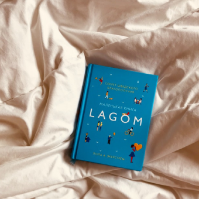
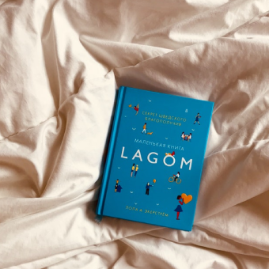

Stay Focused on
Mission 2022
Do you struggle with reaching your goals? One thing that makes goals so difficult to achieve is that it’s hard to stay focused enough to keep working towards them.
Explore NowScroll down to explore more about us


 
